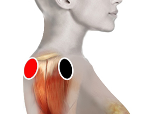

Hombro congelado
hombro - hombro
hombro - riñón (hl)

Generalidades:
En el hombro congelado o frozen shoulder (en inglés) la cápsula del hombro se espesa y se endurece. Se desarrollan bandas rígidas de tejido, llamadas adherencias. En muchos casos, hay menos líquido sinovial en la articulación. El signo característico de esta condición es la incapacidad de mover el hombro, el movimiento puede causar dolor sordo o fijo que se puede extender del hombro hasta el codo.
Se desarrolla en tres etapas:
- En la primera fase avanza el endurecimiento de la articulación, acompañada de dolor, esta fase de avance de la enfermedad puede durar varios meses.
- En la segunda fase la inmovilidad persiste, mientras el dolor disminuye.
- Finalmente, en la tercera fase todos los síntomas disminuyen y el hombro vuelve a la normalidad.
Causas:
No hay una causa única para este trastorno, que pudieramos considerar de tipo crónico-degenerativo y que afecta mayormente a mujeres entre los 40 a 60 años. Algunos trastornos como Diabetes, hipertensión, problemas de tiroides, obesidad, problemas cardiacos, pueden estar asociados con esta condición, así como el haber sufrido un accidente que haya afectado al hombro.
Tratamiento:
Se pueden colocar los pares sugeridos incluso en forma diaria por 15 minutos y observar el avance de la recuperación. Se puede acompañar el par biomagnético con masajes (si usted está capacitado) usando ungüentos anriinflamatorios. Otras terapias que ayudan a acelerar el proceso de recuperación puede ser aplicación de calor mediante lámparas especiales.
Además de lo anterior se recomienda efectuar ejercicios de fisioterapia, de preferencia supervisados por un especialista, los cuales van enfocados a estiramientos y movimientos en todas direcciones para recuperar la movilidad. Conforme se va recuperando el hombro se pueden comenzar a incluir ejercicios de tonificación y fuerza muscular con el uso de pequeñas pesas que pueden ir aumentando de peso gradualmente.